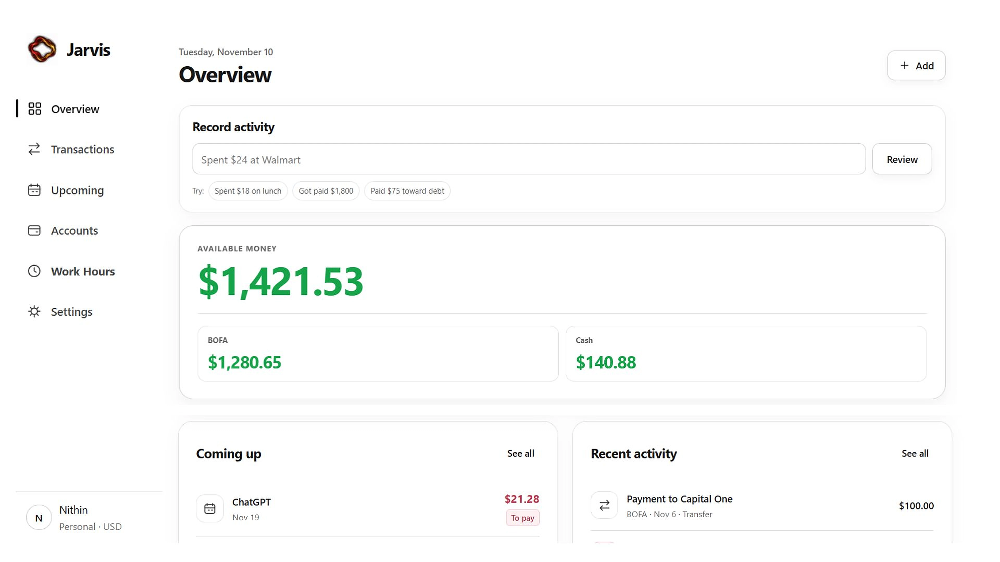

PERSONAL FINANCE


Jarvis
Intelligent personal finance assistant
An account-aware personal finance app connecting income, bills, debt, and future cash flow, with practical forecasting and reminders for day-to-day planning.
Private repository — access is restricted.